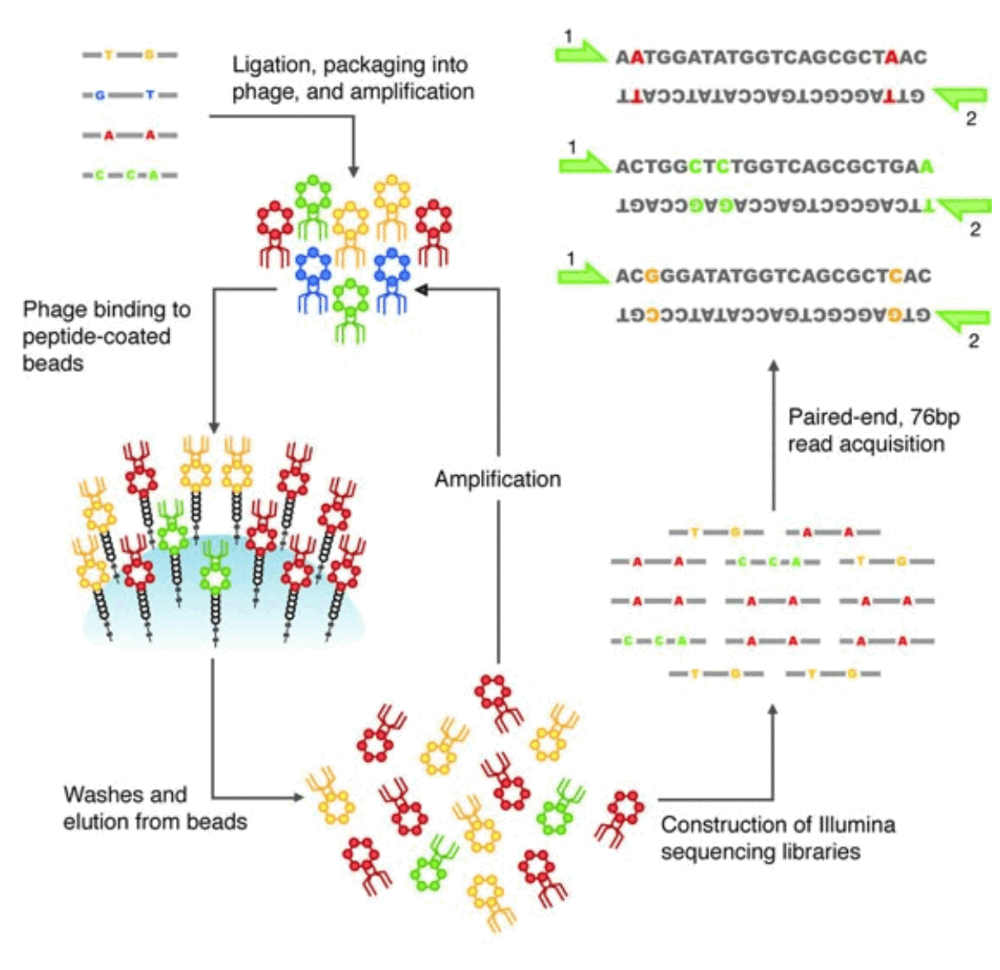
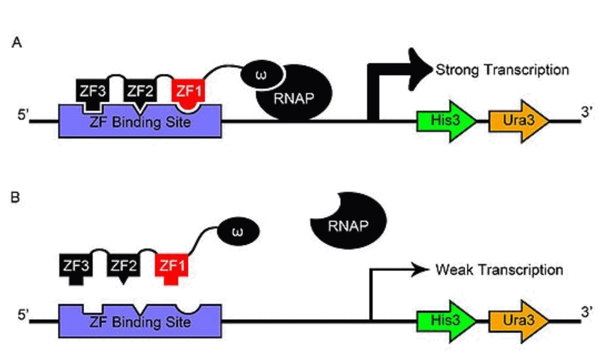
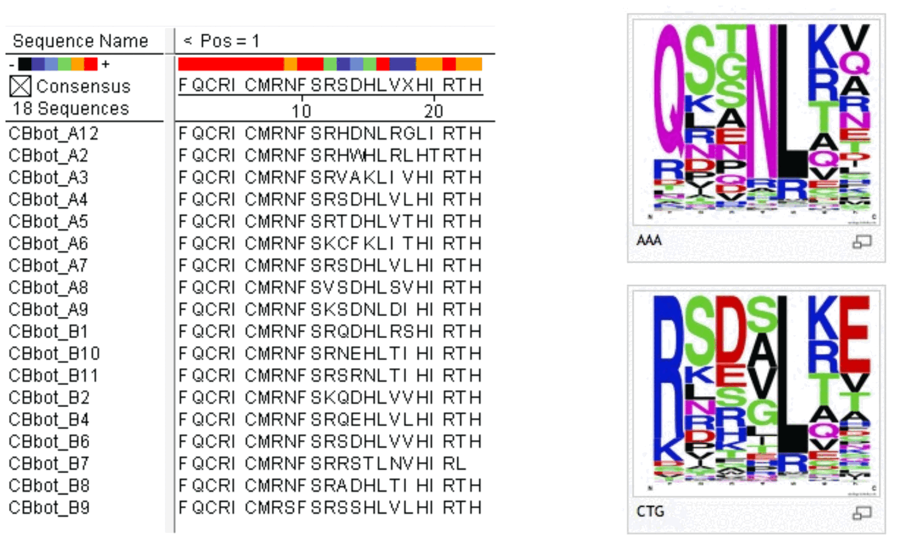

Multiplex characterization of protein functions is less advanced then its used on DNA and RNA, but such methods are feasible here too.
Multiplex characterization of protein function.
Coupled with Phage Display
PMID: 20711194

Just as you can deep sequence the pool of selectants from a SELEX experiment, you can also deep sequence the selectants from panning a phage-display library. Here, Fowler demonstrates that deep sequencing can be used to analyze the results of phage display and thereby characterize mutant WW domains.
Coupled with Phage Display.
One-hybrid multiplexing
Kosuri, Church, Harvard iGEM 2011

Genetic selections provide one of the most promising routes towards applying deep sequencing to protein functions. Here is an illustration from the 2011 harvard igem team with Sri Kosuri and George Church in which they adapt a one-hybrid system to characterize a library of 55,000 zinc finger genes.
This is a normal way in which zinc fingers are been assayed. You construct a yeast strain that reports transcription by expression of selectable markers. If the zinc finger binds to a probe sequence inserted upstream of the promoter, RNA polymerase is recruited to the DNA, the markers express, and the cell survives. Therefore, transcription becomes linked to survival of the cells.
The Harvard experiment employs a library of computationally-designed ZF’s and synthesizes 55,000 of them on one Agilent OLS array. After selection, the survivers are deep-sequenced.
One-hybrid multiplexing.
One-hybrid multiplexing
Kosuri, Church, Harvard iGEM 2011

From this, they get a bag of zinc finger sequences that all bind to the probe sequence. From such data, models encapsulating the binding specificity of each designed zinc finger can be calculated. What’s represented on the right are ‘sequence logos’ that visually represent the pattern of sequences that work for different triplets. However, there are also hidden markov-style models that can be constructed from such data that enable prediction of interactions between a zinc finger and a given DNA.
One-hybrid multiplexing.